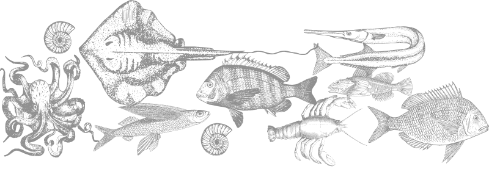

Чтобы поймать коричневых крабов, вам не понадобится больше, чем фонарик и быстрые рефлексы - последнее, что видят коричневые крабы, - это вспышка и стреляющая рука. Но вы должны действовать быстро: через секунду или две краб понимает, что происходит, и использует свои когти, чтобы ущипнуть Вас изо всех сил, и он не отпустит Вас легко. Таким образом, ловля крабов не только обеспечивает вкусную еду, но и вызывает выброс адреналина.
Чтобы поймать коричневых крабов, вам не понадобится больше, чем фонарик и быстрые рефлексы - последнее, что видят коричневые крабы, - это вспышка и стреляющая рука. Но вы должны действовать быстро: через секунду или две краб понимает, что происходит, и использует свои когти, чтобы ущипнуть Вас изо всех сил, и он не отпустит Вас легко. Таким образом, ловля крабов не только обеспечивает вкусную еду, но и вызывает выброс адреналина.
Чтобы поймать коричневых крабов, вам не понадобится больше, чем фонарик и быстрые рефлексы - последнее, что видят коричневые крабы, - это вспышка и стреляющая рука. Но вы должны действовать быстро: через секунду или две краб понимает, что происходит, и использует свои когти, чтобы ущипнуть Вас изо всех сил, и он не отпустит Вас легко. Таким образом, ловля крабов не только обеспечивает вкусную еду, но и вызывает выброс адреналина.
Чтобы поймать коричневых крабов, вам не понадобится больше, чем фонарик и быстрые рефлексы - последнее, что видят коричневые крабы, - это вспышка и стреляющая рука. Но вы должны действовать быстро: через секунду или две краб понимает, что происходит, и использует свои когти, чтобы ущипнуть Вас изо всех сил, и он не отпустит Вас легко. Таким образом, ловля крабов не только обеспечивает вкусную еду, но и вызывает выброс адреналина.
Чтобы поймать коричневых крабов, вам не понадобится больше, чем фонарик и быстрые рефлексы - последнее, что видят коричневые крабы, - это вспышка и стреляющая рука. Но вы должны действовать быстро: через секунду или две краб понимает, что происходит, и использует свои когти, чтобы ущипнуть Вас изо всех сил, и он не отпустит Вас легко. Таким образом, ловля крабов не только обеспечивает вкусную еду, но и вызывает выброс адреналина.
Чтобы поймать коричневых крабов, вам не понадобится больше, чем фонарик и быстрые рефлексы - последнее, что видят коричневые крабы, - это вспышка и стреляющая рука. Но вы должны действовать быстро: через секунду или две краб понимает, что происходит, и использует свои когти, чтобы ущипнуть Вас изо всех сил, и он не отпустит Вас легко. Таким образом, ловля крабов не только обеспечивает вкусную еду, но и вызывает выброс адреналина.
Чтобы поймать коричневых крабов, вам не понадобится больше, чем фонарик и быстрые рефлексы - последнее, что видят коричневые крабы, - это вспышка и стреляющая рука. Но вы должны действовать быстро: через секунду или две краб понимает, что происходит, и использует свои когти, чтобы ущипнуть Вас изо всех сил, и он не отпустит Вас легко. Таким образом, ловля крабов не только обеспечивает вкусную еду, но и вызывает выброс адреналина.
Чтобы поймать коричневых крабов, вам не понадобится больше, чем фонарик и быстрые рефлексы - последнее, что видят коричневые крабы, - это вспышка и стреляющая рука. Но вы должны действовать быстро: через секунду или две краб понимает, что происходит, и использует свои когти, чтобы ущипнуть Вас изо всех сил, и он не отпустит Вас легко. Таким образом, ловля крабов не только обеспечивает вкусную еду, но и вызывает выброс адреналина.
Чтобы поймать коричневых крабов, вам не понадобится больше, чем фонарик и быстрые рефлексы - последнее, что видят коричневые крабы, - это вспышка и стреляющая рука. Но вы должны действовать быстро: через секунду или две краб понимает, что происходит, и использует свои когти, чтобы ущипнуть Вас изо всех сил, и он не отпустит Вас легко. Таким образом, ловля крабов не только обеспечивает вкусную еду, но и вызывает выброс адреналина.
Чтобы поймать коричневых крабов, вам не понадобится больше, чем фонарик и быстрые рефлексы - последнее, что видят коричневые крабы, - это вспышка и стреляющая рука. Но вы должны действовать быстро: через секунду или две краб понимает, что происходит, и использует свои когти, чтобы ущипнуть Вас изо всех сил, и он не отпустит Вас легко. Таким образом, ловля крабов не только обеспечивает вкусную еду, но и вызывает выброс адреналина.
Гольфстрим, несущий теплую воду из Мексиканского залива через Атлантический океан, течет на север вдоль норвежского побережья в прозрачную, чистую ледяную воду Арктики. Это создает идеальные условия для невероятно богатой морской экосистемы.
Мелкая рыба, большая рыба, моллюски и другие формы жизни. Некоторые из них - местное население, другие - мигрируют или проеплывают через земной шар. Некоторые предпочитают холодное открытое море, другие живут в тихих глубоких фьордах, защищенных стеной островов и шхер. Каждый из них играет свою роль в сложном и увлекательном морском жизненном цикле.
Разнообразие морепродуктов из этой среды уникально. Это одна из основных причин, почему Норвегия является вторым по величине экспортером морепродуктов в мире. И есть также причина, по которой повара и знатоки всего мира выбирают морепродукты из Норвегии: вам будет сложно найти такой же выбор и качество где-либо еще.
Норвежские морепродукты - это качественные морепродукты, и мы рады ими поделиться. Вот почему нашими морепродуктами наслаждаются во всем мире. Международное значение этой отрасли наглядно демонстрирует тот факт, что норвежские морепродукты путешествуют примерно в 150 стран. Мы второй по величине экспортер морепродуктов в мире.
Великолепная прибрежная природа Норвегии и разнообразие жизни, которое она поддерживает, - это основа нашего существования с каменного века. Мы знаем, что обязаны передать это будущим поколениям. Море - это дар, который продолжает дарить, но только до тех пор, пока мы продолжаем уважать его и бережно относимся к тому, что нам было дано.
Норвегия имеет одну из самых передовых и хорошо зарекомендовавших себя систем устойчивого развития и управления как в рыболовстве, так и в аквакультуре. Это не случайность, а систематическая работа на всех уровнях, обеспечивающая безопасность потребителей и благополучие рыб.
Большой упор на благополучие животных и строгие правила означают, что наши морепродукты неизменно высокого качества и безопасны для употребления. Производство является экологически безопасным и ответственным, оставляя минимальный след на окружающую среду.

Вы получаете самые лучшие морепродукты Неважно, что это за морепродукты, потому что они норвежские, а значит - самого лучшего качества.
Связаться с нами mail@seafood.no
Телефон: +47 77 60 33 33
Норвежский совет по морепродуктам
Stortorget 1
PO Box 6176
N-9291 Tromsø